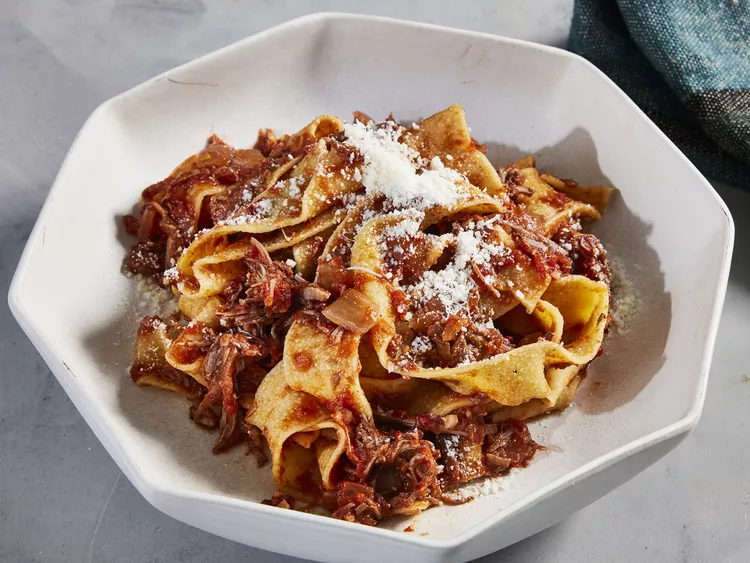

BEEF RAGU

Description
Beef Ragu is a classic Italian dish that's loaded with goodies! Beef chuck roast is cooked slowly in a large pot, then smothered in a red wine sauce which has a wonderful depth of flavor. Serve with pasta for a super hearty meal, perfect for a filling weeknight or special occasion dinner!
Ingredients
- 2 tablespoons olive oil
- 1 (2 pound) boneless beef chuck roast, cut into 2-inch cubes
- 1 teaspoon ground black pepper
- 3 teaspoons kosher salt, divided
- 1 yellow onion, chopped
- 6 cloves garlic, chopped
- 2 tablespoons harissa (Optional)
- 2 tablespoons tomato paste
- 1 cup dry red wine
- 1 (28 ounce) can crushed tomatoes
- 1 bay leaf
- 1 pound pappardelle pasta, cooked and drained
- grated Parmesan cheese, for serving
Steps
- Heat oil in a large Dutch oven over medium-high. Season chuck roast with pepper and 2 teaspoons salt. Sear meat until browned on every side, working in batches if necessary, about 10 minutes. Remove from Dutch oven and transfer to a large plate.
- Reduce heat to medium and stir in onion. Cook, stirring often, until softened, about 8 minutes. Add garlic and cook, stirring constantly, until fragrant, about 1 minute. Stir in harissa and tomato paste; cook, stirring constantly, until caramelized, about 2 minutes
- Pour in wine and cook, scraping the bottom of the pot with a wooden spoon to loosen any browned bits, until reduced by two thirds, about 5 minutes. Stir in tomatoes, bay leaf, chuck roast, and remaining 1 teaspoon salt. Reduce heat to medium-low and cover. Cook, stirring occasionally, until meat is tender, sauce has thickened, and flavors meld, about 2 1/2 hours.
- Remove and discard bay leaf. Transfer meat from Dutch oven to a cutting board and shred using 2 forks. Return meat to pot and stir in pappardelle. Top with grated Parmesan cheese.
Back to recipes